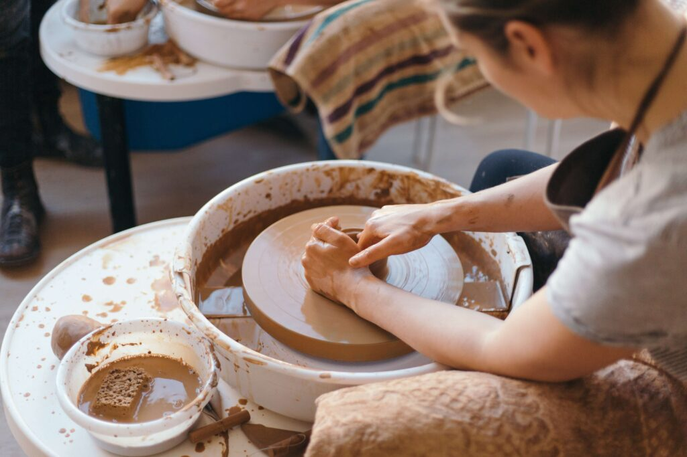

La Nostra Storia
La nostra avventura è iniziata con un gruppo di amici appassionati di artigianato e creatività. Abbiamo sempre apprezzato la bellezza e l’unicità dei prodotti fatti a mano, ma ci siamo resi conto che spesso questi meravigliosi articoli non avevano la visibilità che meritavano. Così, abbiamo deciso di creare una piattaforma che potesse fungere da vetrina per artigiani locali e internazionali, offrendo loro un'opportunità per condividere il loro talento con il mondo.
